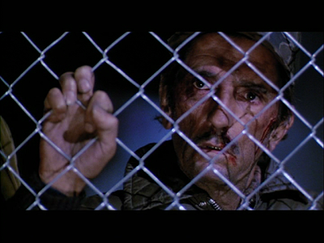

"Avenge me!" Tom Eckert, bloodied but unbowed, gazes through the wire of a "re-education" camp at his sons Jed and Tom following the totalitarian takeover of America in the 1984 film Red Dawn. While that movie depicted a Soviet occupation of the U.S., rather than a collapse into domestic totalitarianism, the much-derided film may be taking on a new relevance a quarter-century after its original release.
The scene is one familiar to many, if not most, American males of a certain age.
Colonel Ernesto Bella, the Cuban military ruler of Soviet-occupied Calumet, Colorado, is patiently interrogating Mayor Bates, who -- since he poses no threat -- is permitted the continued use of his official title (even though Bella has appropriated the Mayor's limousine).
The subject is the whereabouts of Bates' son, Daryl, and several other local teenagers suspected of staging guerrilla attacks on the occupation troops. "Daryl, he wouldn't hurt a fly," Bates insists in a voice heavily flavored with the bogus bonhomie that comes naturally to politicians. "I know my son, Colonel. He's not the guerrilla type."
Col. Bella is not convinced. "According to records, Mayor, your son is a prominent student leader," the Cuban points out. "Yes, well, he's a leader, but not in a violent or physical way," Bates stammers. "He's more of a politician, like his father. He's not a troublemaker --"
"Then who is?" interjects Col. Bella, who, weary of Bates's piscine floundering, skewers him with a barbed look.
After taking a moment to catch his breath and collect his scattered wits, Bates offers an answer he knows will please his masters, and probably lead to the death of some former friends.
"Well, let's just say -- it runs in some of the families," he replies as he contorts his face into a caricature of a politician's confident smile.
Bella, not even attempting to hide his disgust, responds with a derisive chuckle.
"This community is indeed fortunate to have a shepherd like him," Bella comments to his aide-de-camp, scorn oozing from every syllable.
Deflated yet determined to play out his chosen role, Bates tries to clothe his naked collaboration in the robes of respectable "moderation": "Well, I just want to see this thing through, Colonel."
Shortly thereafter we see Bella presiding over the execution of a large group of "troublemakers," who are gunned down in a ditch at the outskirts of town. They remain defiant to their last mortal breath, which they use to hurl the strains of "America the Beautiful" into the face of their murderers.
Standing, appropriately enough, at Bella's side -- or, more exactly, at his heel -- is Mayor Bates, who had been dragged along to see his handiwork primarily as an object lesson regarding his fate should be somehow manage to overcome his canine servility.
The premise of the movie from which those scenes are drawn, the 1984 jingo-fest Red Dawn, is the conquest of the Midwestern United States by a Soviet/Cuban/Nicaraguan invasion force. Wildly implausible at the time, that storyline has not gained credibility over the past quarter-century. However, the movie's depiction of young, athletic mountain boys harrying and wearing down a vastly superior military force through guerrilla tactics in some ways foretold the eventual defeat of Soviet forces in Afghanistan, and Washington's impending defeat there as well.
In addition to presenting a creditable dramatization of fourth generation warfare, the movie also offers some valid insights regarding the tactics employed by totalitarian rulers and those who oppose them.
While it's profoundly doubtful that Americans will be ground beneath the heel of a Russian-led occupation force, there's a growing likelihood that the government ruling us -- a quasi-socialist kleptocracy supported by a militarized proto-police state -- will metastasize into undisguised totalitarianism.
Every totalitarian system, whether imposed through military conquest or internal subversion, requires the services of people like the gelatinous Mayor Bates -- those who have spent their lives seeking power and the favor of those who exercise it, and are willing to betray anybody and everybody in order to remain personally secure once power is in the hands of those who are utterly ruthless.
The common refrain of such people -- the Collaborator's Song, as it were -- is always some variation on the theme of "I just want to see this thing through."
A different take on that treacherous tune was performed by the character of Max Detweiler in The Sound of Music, a melodramatic adaption of the true story of Austria's Trapp Family.
Captain von Trapp, as played by Christopher Plummer (left); in real life, with his wife Maria (below, right).

Since that film is tragically disfigured by song and dance numbers (guys prefer battlefield choreography set to the music of gunfire, punctuated by occasional explosions) its surprisingly strong message about resistance to totalitarian subversion is largely unknown to the male film audience.
The story is set in Austria just prior to the Anschluss, an event anticipated with dread by Austrian patriots -- such as Capt. von Trapp -- and eagerness -- by the loathsome likes of Herr Zeller, an arrogant little functionary who would become gauleiter once the Nazis were in power. Caught in between were many people like the wealthy Herr Detweiler, the self-appointed promoter of the von Trapp Family Singers.
Max was frustrated by Capt. von Trapp's reluctance to permit his children to sing in public, but terrified by his refusal to accommodate the Nazis in any way once the betrayal of his country was consummated.
When the Nazis sent the Captain a conscription notice, Max took aside Maria, the family's once-time governess who became the Captain's wife, and urged her to use her influence to moderate the Captain's views.

"He's got to at least pretend to work with these people," Max admonished Maria. "You must convince him."
"I can't ask him to be less than he is," replied Maria with quiet pride.
To his credit, Max did aid the Captain and their large family in their escape from their Nazi-dominated homeland. To his shame, Max -- like many thousands of his countrymen -- helped make the betrayal of their homeland possible by "pretending" to work with the enemy, rather than refusing to cooperate.
Unabashed collaborators like Mayor Bates -- or their real-life versions, like the much-debated Malinche -- are relatively few in number. Those of the Max Detweiler type are quite common, and many of them -- despite their best efforts at maintaining the pretense of support for the ruling power -- find their names written down on the lists compiled, and dutifully turned in, by those whose collaboration is more overt, and whose desire is to "see this thing through" at whatever cost to other people.
What do such unpleasant matters have to do with life in contemporary America? The tragic answer to that question is: A great deal.
Many people were shocked just a few weeks ago when we were given a reminder that the government ruling us compiles a roster of official enemies, and that the enforcement arm of Leviathan's state-level affiliates is being trained to recognize "danger signs" of political "extremism."
This reminder came courtesy of the Missouri Information Analysis Center (MIAC), which issued a "strategic report" last February entitled "The Modern Militia Movement. MIAC is one of more than fifty counter-terrorism "fusion centers" that pockmark the American landscape like syphilitic sores.
These entities are jointly operated by state, local, and federal law enforcement and intelligence agencies, with involvement by some branches of the military and even a select few nominally private sector entities.
Fusion centers are more appropriately referred to as domestic intelligence soviets -- policy making "councils" designed to create and impose a ruling "consensus" regarding the nature of the internal "threat." They tend to be highly secretive, and operate on the assumption that their activities are not subject to the Freedom of Information Act or its state-level equivalents.
The "report" itself is a product of the same congeries of left-wing "watchdog" groups who have been laboring for decades to criminalize everything but "progressive" opinion and activism. I would write that MIAC simply "regurgitated" what it was fed by those people, but the olfactory signature of the report in question suggests that it exited the bureaucratic apparatus by way of a bodily orifice other than the mouth.
As with all such efforts at broad-brush civic excommunication, "The Modern Militia Movement" was written by people of bad faith whose net gathers of every kind but their own.
Where else could we find militant white power agitators (a group whose ranks are routinely replenished with an endless supply of federal provocateurs) forced into unnatural association with the supporters of the late Ron Paul presidential campaign, a multi-ethnic movement whose motto was "Liberty, prosperity, and peace"?
It should be understood that this document was written for the guidance of law enforcement personnel, who are instructed that those displaying the traits and attitudes described in the report consider law enforcement to be "the Enemy.... They view the military, National Guard, and law enforcement as a force that will confiscate their firearms and place them in FEMA concentration camps."
The FEMA logo: I don't know if they're the ones who would run detention centers, but they're probably as bad as their worst detractors claim.

Leaving aside the question of which agency would run detention centers in the increasingly likely event of full-scale martial law, a reasonable question urges itself on us at this point: Why shouldn't we view the State's armed enforcers as "the Enemy"?
The typical conduct of police during confrontations with civilians bears eloquent testimony of the fact that they are indoctrinated to treat us as the enemy, and to be prepared to disarm us when given the opportunity -- for their own safety, of course. Why else would police ask motorists if they were armed, or confiscate video and audio recording equipment from witnesses whenever police are involved in potentially controversial episodes of official violence?
The import of the Missouri MIAC report was to prime state law enforcement agents to perceive as potential terrorists anybody who displayed any of the political sentiments listed therein. Thus bumper stickers announcing support for Ron Paul or Chuck Baldwin would be regarded as warning signs, as would the advertisement of hostility toward the FBI, ATF, IRS, UN, or Federal Reserve. None of this is new.
The Missouri document reads almost exactly like a police checklist created in 1995 and presented in Oklahoma City when the federally-facilitated bombing of the Murrah Building by disgruntled former federal employee Timothy McVeigh (and "others [conveniently still] unknown") was still a raw and bloody memory.
During a presentation on "Criminal Justice and Right-Wing Extremism in America," John J. Nutter of the Ohio-based Conflict Analysis Group described that political persuasion as a "lightning rod for the mentally disturbed" and warned the 500 law enforcement personnel in attendance to be wary of those displaying the symptoms of such alleged derangement.
Those symptoms included, but were not limited to, opposition to the UN and the above-mentioned federal alphabet agencies; "excessive" anger over, or familiarity with, the federal atrocities at Waco and Ruby Ridge; opposition to the Federal Reserve; a strong commitment to the right of armed self-defense; unusual knowledge about the Constitution and its history; a tendency to buy gold and silver; and possession of various forms of "extremist" literature. I was particularly intrigued by that last category, since it included the magazine for which I was then employed, as well as the book I had just recently published.
The document assumed that law enforcement agencies would have pretty detailed intelligence on the political opinions, literature collections, and personal habits of the people described as potential terrorist threats. Like the more recent MIAC document, furthermore, Nutter's little report was intended to fortify the assumption that such people, rather than being active citizens in the tradition of Samuel Adams and Thomas Paine, were a direct threat to the physical well-being of law enforcement personnel.
Nutter's profile was just one of many versions of the same official libel that was reproduced in Missouri's MIAC report. The post-OKC bombing "Counter-terrorism and Effective DeathPenalty Act" appropriated several million dollars to the federal Bureau of Justice Assistance (BJA) by way of the Institute for Intergovernmental Research (IIR) for use in creating the State and Local Anti-Terrorist Training program (SLATT). SLATT was a conduit linking the Justice Department and state police agencies directly into the demimonde of hard-left "watchdog" groups.
The program's official literature (circa 1999) described its mission as providing "pre-incident awreness ... preparation, prevention, and interdiction training and information to state and local law enforcement personnel in the areas of domestic anti-terrorism and extremist criminal activity.... The SLATT law enforcement training program focuses on the detection, investigation and prosecution of extremist-based crimes, criminals, and criminal activity."
Although SLATT's emphasis changed to reflect a pre-occupation with Middle Eastern terrorism following the 9-11 attacks, it still presents training about "The Psychopathology of Hate Groups" ("hate" groups are always right-wing, of course -- and note the call-back here to Nutter's Soviet-flavored idea that "right-wing" politics attract the "mentally disturbed") and "Recognizing Terrorist Indicators and Warning Signs."
SLATT could be considered the progenitor of today's "fusion centers." Indeed, despite repeated disavowals of the fact, it can be demonstrated that SLATT played a key role in creating the FBI's tendentious 1999 Project Megiddo "strategic report" on domestic "extremism" and potential terrorist threats. That document, widely circulated among state and local police nation-wide identified "religious motivation and the NWO [new world order] conspiracy theory" as the "two driving forces behind the potential for millennial violence."
Both SLATT and the archipelago of "fusion centers" are subsidiaries of the FBI's Terrorist Screening Center (TSC), which collects and disseminates information about "listed threats" to state and local police. The defamatory "intelligence product" distributed by Missouri's fusion center -- the "strategic report" that listed supporters of Ron Paul or the Constitution Party among potential terrorist threats -- is not only of a piece with previous efforts by the likes of Nutter and SLATT, it is all but certainly representative of the kind of material being distributed to police nation-wide.
None of this is the result of carelessness or ignorance. The effort to shoehorn right-leaning activists into the role of "domestic terrorist threat" has been going on for nearly a decade and a half, and the people responsible for it certainly dispose of adequate resources to know exactly what they are doing.
They taxonomize us as terrorists and enemies of the state not because they have misinterpreted our values and objectives, but because they honestly regard us to be such, irrespective of our efforts to pursue the vindication of our ideals through lawful and peaceful means. They consider us to be the domestic enemy. We should be thankful for their candor, and earnestly reciprocate that designation.
This means, at the very least, that in our dealings with the State's agents, particularly those employed by what the Russians call the "Organs of State Security," we should follow Solzhenitsyn's advice: "Don't believe them, don't fear them, don't ask anything of them." We certainly should not support them, respect them, or seek to cultivate a relationship with them. Doing so will inevitably lead to compromise and collaboration.
And this brings up a sad and unpleasant element of this subject I'm duty-bound to address.
A few days ago, just before the efforts of others led to the official retraction of the Missouri MIAC report, the upper management of a "constitutionalist" organization for which I was once employed has instructed its members, and whatever elements of the general public with which it has influence, to cultivate a good "relationship" with their local Homeland Security "fusion center": "The John Birch Society is urging members and all constitutionalists to work on bettering relationships with local police as well as the DHS Fusion Centers."(Emphasis added.)
I reiterate that this was the voice of that organization's upper management. I would assume that many within the rank-and-file membership have a much sounder take on the issue.
Why should constitutionalists seek to have a "relationship" of any kind with a governmental entity that exists without constitutional warrant? Fusion centers are designed to amalgamate law enforcement under federal control, which would be entirely impermissible, from a constitutional perspective, even if they were generating reliable intelligence regarding legitimate terrorist threats.
Why should any organization that advertises its supposed expertise regarding Communist subversion embrace a course of action that could be summarized in the slogan: "Support your local Homeland Security Soviet"?
Is the intention here to do what is necessary to "see this thing through," in the style of the invertebrate Mayor Bates, or merely to "pretend to work" with those who are building the New Order, as the duplicitous Max Detweiler would put it?
The only principled approach to dealing with the fusion centers, and the entire Soviet-style "Homeland Security" apparatus, is to agitate for its abolition, rather than helping to consolidate the power of that apparatus by treating it as legitimate in any sense.
As bad as things presently are, we're experiencing merely the overture to what may become a bloody and violent historic tragedy. Opposing the Organs of State Security now costs relatively little -- much less than it will eventually cost when they have been "strengthen[ed] ... in exercise," and their roles become "entangle[d] in precedents," to adapt Madison's timeless language.

Yet we see that even in these circumstances, some supposed defenders of "Freedom and Family" are choosing collaboration rather than timely confrontation. Rather than hacking at the roots of police state tyranny, or even pruning some of the more conspicuous branches, they are helping to water and fertilize the mostrosity in the name of maintaining a good "relationship" with the enemy.
And all the while the people who dictate that course of action can be expected to sing -- in counterpoint with whichever version of the Collaborator's Song they select -- the occasional hymn to their own sensible moderation.
As I said, things will get much uglier than they are at present. Those who choose to collaborate when the alternative is relatively painless will either have to make some painful course corrections right now, or they'll eventually find themselves standing metaphorically at the elbow of Colonel Bella as his troops gun down the people whose names were so thoughtfully provided to the Enemy -- in the cause of maintaining that valued "relationship" and "seeing this thing through," of course.
A brief afterthought....
I suppose this question is directed at people who are either thinking of joining the JBS or renewing their membership in the organization:
Is there cause for concern over having your name on the membership roster of an organization whose top management seeks a congenial "relationship" with the "fusion centers" maintained by the Department of Homeland Security?

On sale now!
Dum spiro, pugno!
29 comments:
Great post, William.
Mr. Grigg, this really is an excellent post. You give a precise diagnosis of the current situation as well as very sober guidelines on how we should view and act with the growing Soviet alphabet soup grid being constructed. This statement of yours I found to be powerful and hitting at the heart of the matter:
"They consider us to be the domestic enemy. We should be thankful for their candor, and earnestly reciprocate that designation.
I couldn't help as I was reading to think of the Biblical exhortation to "come out from among them..." and all of the other calls for Christians to have no association with wicked groups.
Another smaller point but by no means minute is the false flag terrorism. It seems that it is about time for another big event to really kick things off, the last two administrations had a justifying event early on in their rule to implement otherwise revolting growths of federal government power at the expense of civil liberty. I think this Obama push will be the administration that brings in hot martial law, they just need an event.
Another footnote, is the fact that the military shows up at every natural and man made disaster now. From the mass shootings, to the flooding in the Dakotas. It's always presented as "Oh they are helping out, giving food to hungry...".
Perhaps the JBS upper management has been infiltrated by federal provocateurs or otherwise undercover agents?
A few days ago, just before the efforts of others led to the official retraction of the Missouri MIAC report, the upper management of a "constitutionalist" organization for which I was once employed has instructed its members, and whatever elements of the general public with which it has influence, to cultivate a good "relationship" with their local Homeland Security "fusion center": "The John Birch Society is urging members and all constitutionalists to work on bettering relationships with local police as well as the DHS Fusion Centers."(Emphasis added.)
Will, you know the JBS better than any of your readers, but is it possible that this plea by JBS senior leadership was made to encourage the membership to do its own "reconnaissance" of the "Organs", rather than join or abet them? While the thought of doing so is too loathsome for me to contemplate, I've heard other libertarians express the opinion that one of the best things one can do is "volunteer" to be an auxiliary cop for the purpose of "intelligence gathering". In other words, "know thy enemy" in the Sun Tzu sense of the phrase.
I’m a male who loves the Sound of Music, primarily for its exquisite lesson in bravery, demonstrated by Captain von Trapp, who made the exceedingly painful decision to leave his homeland rather than collaborate with his enemies.
I also like the schlocky Red Dawn, not because the particular story told was plausible, but because, as you point out, we could see such totalitarianism imposed from within. I could definitely envision a small number of people attempting to resist such totalitarianism in the manner portrayed in that movie. One of the things I like best about Red Dawn is that I think it’s realistic in its depiction of the resisters slowly being decimated by attrition and weariness. Unlike so many movies in which the “good guys” prevail, that movie is more sobering.
Dave - Erstwhile Urban Wanderer
J'motlie and Liberranter -- It's difficult for me to be objective about the matter both of you touch upon.
The people under discussion are former friends whom I'm inclined to give the benefit of the doubt.
Then again, the knife wounds they left in my back in late '06 are still largely unhealed, so I don't consider them to be particularly trustworthy.
We know enough about the role played by "fusion centers" and the like to understand that the only suitable course of action is to seek their abolition.
It's tremendously useful to cultivate "defectors in place" who will leak information about what they're up to (that's how the MIAC report was leaked to Alex Jones, and how I learned most of what SLATT was up to in the late 1990s).
This isn't the same kind of thing my erstwhile associates at JBS have in mind. For one thing, JBS and The New American have pretty much given up on investigative reporting, which is a screaming pity, given that they still have Bill Jasper on staff, and he's the best investigative reporter in the country.
From my experience with JBS upper management I suspect they're not planning to mount an insurgency, but rather thinking of something along the lines of handing out candy and sweets to the occupation force.
Oh, sorry -- there goes my objectivity again, I guess. We victims of multiple dorsal stab wounds are sometimes funny that way....
IIRC, Red Dawn was actually the last movie I ever went to see in a theatre. This was just before I entered the AF as a "flyboy," actually a "grunt-light" particularly in the realm of GLCM deployments in Europe.
I made a post on another blog a few years ago about SLATT; does anyone remember the ADL's "Militia Watchdog," Sparky? Mr. Pitcavage is a large legend. This stuff is out there for anybody to read and grok. Obviously, none of this stuff is ever broadcast overtly "in your face," unless it's exposed (i.e. the MIAC report) in a "mainstream," high-traffic, venue. And speaking of the MIAC report, it only miraculously garnered a mention on Drudge recently after it had been rescinded, supposedly.
We should be thankful for their candor, and earnestly reciprocate that designation.
Indeed...hehe. Of course, you still have to dig around somewhat to uproot the candor, but not as much as in days past. And Solzhenitsyn's advice is most keen, IMHO, because he was a bona fide expert in managing to live [literally] within the confines [literally] of a serfdom.
The New American have pretty much given up on investigative reporting, which is a screaming pity, given that they still have Bill Jasper on staff, and he's the best investigative reporter in the country.
I never would have uttered/wrote that in your space, Will, but since it now has come from your mouth, ur keyboard, I would have to agree. Mr. Jasper was my favorite investigative writer of TNA articles, but you were a close second, honest!
Lastly, I'll have to make a distinction between collaborating with the State, even passively, involving the revelation of critical knowledge of any kind that will endanger the lives of family members or other totalitarian-loathing folk, with whom you're affiliated, and playing the ignorant and submissive card to the hilt in order to attempt to "skate under the radar," so to speak, of the watchers in question themselves. I've played the latter drama many times. I'm sure you can imagine in your own mind various scenarios where that kind of so-called "collaboration" is most helpful for everyone, except the statists themselves.
The folk who pompously act like roosters in a barnyard and figuratively "beat their chest" and cackle the loudest simply to be seen and heard by the hens and other "lesser" cocks are usually the first to be put on the chopping block AND/OR will be the first to spill their crop about everyone and everything they know as soon as the fox raids the henhouse.
Yea I concur that the new American has for all and intents and purposes abandoned investigative journalism. I now turn to websites like online journal/madsen report to get the hard hitting deep digging that used to be found in the TNA. But at least we can now stay abreast of the recent family friendly/ christian oscars that were held. Yea just we friggin care about as the last of our freedoms swirl down the drain.
Will, another superb post! I would be negligent if I did not also praise some of your regular commentators such as Dixiedog, Liberrantor, and many others for their frequent and very substantive contributions. With these examples to follow I often feel intellectually unworthy to comment here but, as you know, this topic gets my blood pressure up.
The United States has become a nation of pacified collaborators who lack both the intelligence to understand what now lies ahead of us, and the education to understand why they should be outraged by it.
When the simple acts of believing in the founding principles and documents of this once great nation and the espousing of those beliefs is sufficient to get one "labeled" a domestic terrorist, then I contend that is indeed time to act on the observation of H.L. Menken:
"Every normal man must be tempted at times to spit on his hands, hoist the black flag, and begin to slit throats."
In addition, today, the free market system of the United States had the final nail pounded into its coffin as the "anointed one" essentially fired the CEO of General Motors thus proving there is no legal line this administration will not cross in its unquenchable bloodthirst for power.
How did we get here? Maybe Alexis de Tocqueville has the answer:
"After having thus successively taken each member of the community in its powerful grasp and fashioned him at will, the supreme power then extends its arm over the whole community. It covers the surface of society with a network of small, complicated rules, minute and uniform, through which the most original minds and the most energetic characters cannot penetrate, to rise above the crowd. The will of man is not shattered, but softened, bent, and guided; men seldom forced by it to act, but they are constantly restrained from acting. Such a power does not destroy, but it prevents existence; it does not tyrannize, but it compresses, enervates, extinguishes, and stupefies a people, till each nation is reduced to nothing better than a flock of timid and industrious animals, of which the government is the shepherd."
How much longer before we throw off the constraints and act? As I look across the room at my son I have to ask myself: Is my life so dear to me that I am willing to condemn him and his children to generations of servitude because I was too cowardly to act? I am slowly coming to the realization that my life will quite possibly end, one way or another, at the hands of my own government. If and when this possibility becomes certainty, I vow to die on my feet with a hot, smoking rifle in my hands fighting for my childrens' future, not on my knees in a FEMA detainment camp. When all husbands and fathers take upon themselves this same vow, we can begin to right this ship.
jk
Si vis pacem, para bellum
Learn to live inside your head. Don't speak unless spoken too. Keep religion and politics to yourself. The people of Germany had the "German glance" before talking about controversial subjects. Looks like we'll have to learn that. Let's use this www revelation while we can. It will be shut down eventually. Maybe this conficker hype will be a catalyst.
Mr. Grigg, could it be that the present JBS leadership, by educating the agents of the Fusion centers with TRUTH published by the JBS, truth concerning the JBS, truth concerning Ron Paul, Dr. Chuck Baldwin, the North American Union, the Constitution, etc. actually undermine the evil purposes of those within DHS who would lable supporters of Ron Paul, etc. as terrorists?
Could it be that by having the courage to meet the Fusion Center's propaganda head on like this, at its source, is not "collaboration" but instead is
a Christian style confrontation with facts? Afterall, the Missiouri authorities have already had to repudiate the offending report due to the pressure from JBS members, C4L members, and others labled by it.
Peacefully confronting the Fusion Center personnel head on with actual contact by those the agents of government are supposed to assume are the enemy, teaches the Fusion Center personal that those so accused are really just good Americans seeking to restore constitutionalism to our government. Maybe some of those agents will begin to understand and actually turn around the Fusion Centers from the bottom up, or at least resist the spread of other inacurate and inflamatory pieces. Or they will provide warning of such.
It is not collaboration as the Society is not helping the Fusion Center to spread the lies from DHS or the Southern Poverty Law Review. Collaboration would mean actually aiding them. There is no way you can construe what the Society's members would be doing as aiding them.
Your supposed divination of the motivations of the top JBS leadership in their course of asking members to meet with Fusion Center people and desiminating JBS produced information regarding topics that the Society has invesitgated to Fusion center personnel seems more like guess work by a disgruntled former JBS employee bent on sullying the JBS name than "investigative reporting."
I have certainly met with Legislators in the past that I didn't agree with and talked with them about areas of disagreement, but that didn't make me a collaborator with their unconstitutional choices. Your judgement seems unfair and uncalled for. You even admit you can not be objective where the JBS is concerned.
I'll make sure and stay out of the People's Republik of Missouri even if it cost more in gas and adds mileage. I wonder if the SPLC had anything to with this MIAC bravo sierra? The New American was great back in the 90's when Slick Willie and Hitllary were in power a friend of my dad would hook me up with stacks of em when he was done reading them. I would only use the current New American for birdcage lining or emergency toilet paper.
Mr. Grigg, could it be that the present JBS leadership, by educating the agents of the Fusion centers with TRUTH published by the JBS, truth concerning the JBS, truth concerning Ron Paul, Dr. Chuck Baldwin, the North American Union, the Constitution, etc. actually undermine the evil purposes of those within DHS who would label supporters of Ron Paul, etc. as terrorists?
With all respect to the sincerity behind this question, my answer is "no." The people responsible for affixing those labels are not acting out of ignorance, or a lack of education; they know what they're doing.
What you suggest would be a bit like trying to "educate" the Chinese Politburo about the fallacies of Marx.
If that seems a bit severe, consider an analogy drawn from the film that represents the apex of the cinematic art -- yes, I'm referring to "Ghostbusters." Remember how Ernie Hudson's character was asked if he believed in various ridiculous things, from astral projection to reincarnation? His reply was: "If there's a paycheck in it, I'll believe anything you say."
Fusion center apparatchiks will "believe" whatever they're required to by the people who sign their paychecks.
[Through the JBS's educational outreach to fusion centers it's possible that] some of those agents will begin to understand and actually turn around the Fusion Centers from the bottom up, or at least resist the spread of other inacurate and inflamatory pieces. Or they will provide warning of such.
You're missing the point: The fusion centers should not exist. They must be abolished. Full stop.
Yes, as I pointed out in the essay, it would be useful to cultivate "defectors in place" within the fusion centers, if possible. But the immediate priority should be to demolish the damn things outright, rather than to refine their efforts as they carry out an unconstitutional function.
On the same reasoning that you offer above, shouldn't we work to "reform" the UN from the "bottom up," rather than demanding U.S. withdrawal from the world body (which would lead to its immediate demise)? How would that campaign differ in principle from what the JBS is proposing regarding the fusion centers?
It is not collaboration as the Society is not helping the Fusion Center to spread the lies from DHS or the Southern Poverty Law Review. Collaboration would mean actually aiding them. There is no way you can construe what the Society's members would be doing as aiding them.
First of all, I trust the Society's membership to be more sensible and perceptive than that of the wobble-bottomed, linguine-spined management caste in Appleton.
Secondly, by helping to consolidate the fusion centers when the only constitutionally sound approach is to agitate for their immediate abolition is collaboration. The issue, again, is not to fine-tune the message those unconstitutional entities are emitting, but to shut them down entirely.
To revert to the UN example:
When I was on staff at the JBS, we would frequently criticize organizations -- such as the NRA -- that sought ECOSOC status as NGOs at the UN. We had no problem identifying them as collaborators with the UN -- not because they were promoting the worst UN policies, of course, but because they were lending legitimacy to an organization that shouldn't exist.
Now the JBS management would have that organization take the same approach regarding the fusion centers. It's collaboration, any way you slice it. QED.
Your supposed divination of the motivations of the top JBS leadership in their course of asking members to meet with Fusion Center people and desiminating JBS produced information regarding topics that the Society has invesitgated to Fusion center personnel seems more like guess work by a disgruntled former JBS employee bent on sullying the JBS name than "investigative reporting."
I have certainly met with Legislators in the past that I didn't agree with and talked with them about areas of disagreement, but that didn't make me a collaborator with their unconstitutional choices. Your judgement seems unfair and uncalled for. You even admit you can not be objective where the JBS is concerned.
First, the JBS has no "leadership"; it is currently under the direction of managers with no strategic vision or appetite for useful confrontation.
Second, you're guilty of a false analogy when you mention meeting with a legislator with a dubious constitutional voting record. Legislative bodies serve a constitutional function; fusion centers do not; indeed, their mission -- expanding and deepening federal control over law enforcement as part of a Soviet-style system of internal surveillance -- is consummately unconstitutional.
Yes, I freely admit that my objectivity regarding the current JBS management is suspect.
Most if not all human beings would deeply resent being fired for no defensible reason, being left without the means of supporting a large family and an invalid wife.
People treated that way would take further offense to learn that those responsible for that decision had circulated documentable lies about their character, work performance, and similar matters.
It is an enduring conundrum that the JBS could be composed of wonderful, self-sacrificing, generous people in its rank and file, and yet be "led" by the likes of the four people who stabbed me and my family in the back.
They are craven, despicable cowards and liars, every one of them, and if any of them is any part of a man he's free to try and make me retract that description (yes, Alan, consider that an invitation).
But I am NOT the one who urged JBS members to support the Homeland Security Soviets, when genuine patriot leaders are demanding their abolition. I'm simply reporting that fact, in context, as an object lesson.
The JBS management has sullied itself. I'm simply taking public notice of that tragic fact.
With all respect to the sincerity behind this question, my answer is "no." The people [Bernanke, Bush, Obama, et al] responsible for affixing [ SAYING one thing and DOING another to promote the destruction of...] those labels [the economy] are not acting out of ignorance, or a lack of education; they know what they're doing.
[Can it be any clearer?...sigh]
What you suggest would be a bit like trying to "educate" the Chinese Politburo about the fallacies of Marx.
Hehe, that's an exact description of Peter Schiff engraved in my mind ;). Yeah, I know that he is not the topic and that he's [supposedly] not a Leviathan aide de camp and whatnot...yada, yada. Nevertheless, it's just that after reading Will's comment above I immediately thought about Schiff's real (or is it merely superficial?) naïvete concerning his apparently inexplicable (to me) bewilderment at WHY folk, who are in Leviathan's employ directly or indirectly, SAY one [logical] thing and yet DO [illogical] things in the realm of economics, or anything else for that matter.
He squeaks about these contradictions on his vlog consistently and, naturally, Will's description is apropo and fits powerful Leviathan agents like a glove, IMHO.
Trying to change an organization, such as the U.N. for example, whose very existence was borne out of the sadistic desires of international oligarchs, from the inside out on a macro level would be like saying on a micro level that Christians should "attend" a bar (U.N.) and talk to the patrons (bureaucrats) about Jesus and being born again (What? Transform it into a church? HAHA!). After all, Christians need to be represented in such places.
Obviously nonsense. These arguments, however sincere they may be, don't work; they never work. You will eventually resemble the target, not the other way around.
Ergo, in the tavern, the Christian will become indistinguishable from the regulars soon enough, just as the initially anti-statist NGO will become indistinguishable from the rest of the statist NGO horde soon enough.
Why is it so hard to convince folk that when you play with [work with] dirt, you'll eventually get dirty? Don't bother playing in the enemy's sandbox, play in your sandbox.
And speaking of playing with dirt, I should probably clarify at this point what I said in my first comment since I can already foresee someone likely getting the wrong idea.
What I specifically mean by "playing the ignorant and submissive card to the hilt" is in terms of working around the globs of "red tape" that one often has to slog through in a heavily-regulated environment where the rules in question have already long been the status quo.
To illustrate merely one example, getting through customs with stuff you wouldn't normally get through with...[I plead the fifth]... If you decide to play stupid, ignorant, and act submissive in those kinds of situations, while the arrogant tax-feeders are "feeling they powa take ova ya," intimidate you (they believe), whatever, you likely wouldn't have your bags checked. You just meekly walk your goofy self through with your bag(s) and move along. It worked for me back in the day. Of course, now after 9/11 the routine is very different and probably wouldn't work.
Even so, it's situations like that that I was mainly talking about. Sometimes one just has to play the "obedient" lowly serf drama to get through a given gatekeeper and his/her potentially attendant Leviathanic headaches ;).
Anyway, keep preachin' it, Will ;).
Wonderful post, Mr. Grigg!
I agree with you, the focus is the abolition of the Fusion Center.
The John Birch Society is asking it's members to act in a way that specifically cited by the Missouri MIAC report. It points to Public Groups: "Organizations hold training events that are open to the public and generally recruit publicly. These groups desire to aid the County Sheriff or Governor in emergencies such as natural disaster. It is not uncommon for these groups to be seen in public doing community service related work."
Just trying to cultivate a relationship is considered to be suspect of possible "para-military" activity. What on earth, can the "upper management" of the organization hoping to gain?
The smashing of jurisdictional walls between the State and Federal government must be restored. Personally, I think private competitive currency is the best way to swing the pendulum. But, outrage and public pressure over the loss of privacy and government lists of political profiling would be a huge step in the right direction.
I was a member of the JBS for many years but I left the society after they refused to admit that 9-11 attacks were an inside job. In fact I was amazed when Bill Jasper wrote an article for the New American supporting the government's position on what happened at the Pentagon on 9-11. Even Chris Bently is still supporting the gov position on 9-11. I don't care for the current leaders either. I worked with Alan Scholl for a brief time and thought he was a nerd. Art Thompson gives me the creeps, I don't trust him. Have you been to the JBS website? There is almost nothing left from the previously vigorus Society. There is no reference anywhere to "conspiracy". Checkout their books and videos store, almost nothing there of value, I was surprised to see that they do have one book on conspiracy, The Shadows of Power, an old and out-of-date piece, they call it their "best seller", and that is it. The Society has been emasculated. Too bad. But I am not going back. Keep up the good work Will.
Will, your response to Anonymous 8:36 AM was a delight to read! You took every premise made and turned it completely on its head. It made me cringe just reading what this person wrote, with that self-righteous, naïve Birch mentality coming through loud and clear.
And I swear, those JBS people need to get a thesaurus, because their perpetual use of the word “disgruntled” to describe most former employees really gets old. They might also want to ask themselves why there are so many unhappy, bitter former employees out there. Could be that it has a lot to do with what you described - the backbiting, lies, and innuendo the staff unfailingly spreads among the members when someone is fired (usually unjustly, as was your case), or simply resigns! It’s as if they cannot conceive of anyone honorable ever choosing to leave their nationalistic, secular, and totally irrelevant Society.
It sounds as if the JBS in recent years has suffered the same fate as the Libertarian National Committee (LNC, my membership in which I tore up six years ago): infiltration and co-option, however gradual, by statists. Such people, while publicly paying at least minimal lip service to the organization's ideological baseline, gradually seize positions of power within the organization and then begin subverting it by playing to the Establishment status quo, watering down the organization's governing platform to "avoid controversy" or "prevent alienation of prospective new members," and attacking those of integrity within the organization who espouse and practice its actual core values. The process acts very much like a viral infection in a human being, and is just as fatal to the organization it infects.
Such "Beltwayitis" has seriously infected a number of longstanding NPOs supposedly dedicated to the preservation of liberty (the CATO Institute is another example that comes readily to mind), not all of them headquartered within the confines of the I-495 corridor. One could easily be forgiven for believing them to be "honey pot" organizations set up by members of the Reigning Establishment to "trap" and keep tabs on those who seek to re-establish liberty, much in the same vein as Emmanuel Goldstein's Brotherhood in Orwell's 1984 served as a trap to catch those who would betray Big Brother and the Party.
Interesting Comparison to "The Brotherhood".
Saddam Hussein had a way of keeping his closest guards and other personnel from rebelling, or so I'm told.
He would have a large group of other guards show up at one guard's house in the middle of the night. They would put a gun to his head and say, "We're going to have a coup, and overthrow Saddam Hussein. Are you with us?" If the guard said "yes", they'd shoot him, if "no" they'd let him go. He would do this routinely, so even if it were a real coup, it would be almost a guarantee that they'd say no.
I don't know if there are any comparisons. But, there you have it.
Yayy! It looks the internet is still here. The conficker bogeyman has passed (?) Non technically proficient family members are calling up asking what to do. I said anti-virus software and keep it up to date. But it's on the news they say it must be true. Well shucks if it's on the news it must be etched on a stone tablet somewhere! When did a nation of rugged individuals become so easily fooled and frightened? Could it be political correctness? The communists started political correctness back in the thirties and it is a plague now. It is nothing more than self-censorship and bottling up of personal opinions so that some won't be offended. How weak and lilly livered the rugged individuals have become.
Conficker bogeyman? What the hell is that?
Ok, just scroogled it. Turns out there was supposed to be some kind of worm or something today.
Shows how much I pay attention to the MSM.
Obviously nonsense. These arguments, however sincere they may be, don't work; they never work. You will eventually resemble the target, not the other way around.
Ergo, in the tavern, the Christian will become indistinguishable from the regulars soon enough, just as the initially anti-statist NGO will become indistinguishable from the rest of the statist NGO horde soon enough.
Why is it so hard to convince folk that when you play with [work with] dirt, you'll eventually get dirty? Don't bother playing in the enemy's sandbox, play in your sandbox.
Nietzsche summed this one up.
“He who fights with monsters might take care lest he thereby become a monster. And if you gaze for long into an abyss, the abyss gazes also into you.”
Anonymous people show some testicular fortitude and choose a nickname. Lack of a nom de guerre doesn't make you incognito. The blog administrator can see your IP address, what browser and os you are using and maybe your internet service provider.
Will, I have Red Dawn on tape. As you know, the reeducation camp behind Tom Eckert eventually gets a major makeover by the resistance and the political prisoners are rearmed and liberated. In the same situation today I am afraid that a lot of Americans would refuse the weapons and meekly remain behind the fencing out of fear "getting into even more trouble with the authorities."
Will, I am afraid that even if all of the males in this country watched The Sound of Music on a regular basis, it would do little good.
Our betters have managed to indoctrinate us so well that they would see no connection with what the Nazis did to what our rulers are trying to do. After all, the Nazis were Fascists while we are an upright Democracy which is trying to fight terrorism, maintain order, etc. This kind of brainwashing will guarantee that few will see the truth until things have degenerated badly.
As the first second generation field staff employee of the John Birch Society I too am sickened but not surprised by the groveling cowardice demonstrated by the whining deballed eunuchs who have infested the leadership positions of the JBS like puss filled chancres in the anal cavities of their fellow likeminded soon to be buggering masters. They are responsible for allowing a once responsible tip of the sword liberty organization to be taken control of by a droll like petty little narcissistic delusional woman's shoe salesman with a savior complex.
They have for years submitted their fat chair moistening posteriors to the continued perverted assaults of their little leader taking it to the hilt, all three inches of it, in the hope that they would gain enough approval to keep their pathetic pay checks and important sounding titles.
The self important puffed up Jack McAnus in the rare moments he is not pounding his little Irish pud in front of his computer monitor reminds me of the drag queens I once arrested in the skid row area of L.A. trying to impersonate real women in order to quench their perverted appetites. He is a lying and slandering coward and that is on his good day.
Alan Scholl is a petty little Cretan who could probably do a fair job of running a bathhouse in San Francisco is so far out of his league in every area he is almost to pathetic to hold accountable for his treasonous cowardice. He is a stupid pussy in every sense of the words. His failed family relations demonstrate this fact as well.
I well remember the brave Art Thompson hiding behind a woman's skirt back in 1997 afraid to enter a courageous JBS sections leaders home to examine the well documented evidence proving proving Gertrude Vance Smiths evil scheming which led to the destruction of the JBS. He would not enter the home unless I left. And this animated ball of human feces is the leader?
Bill Jasper an honorable man who should leave this execrable cable of treasonous lying scum.
Ouch!
I also left JBS and allowed my TNA subscription to expire.
Back in 2003, I emailed TNA's editor concerning six European mainstream news articles (Le Figaro, The Guardian, Agence France-Presse, London Times, etc.) as well as a Reuters AP wire reporting on Osama Bin Ladin's July, 2001 visit to the American Hospital in Dubai where a Dr. Terry Callaway performed kidney dialysis treatment for Mr. Bin Ladin, aka 'Tim Osman'. The same articles reported that the CIA dispatched two CIA officers, one identified as Larry Mitchell and another unknown operative, to meet up with America's Most Wanted Terrorist in his hospital room for a friendly "chat".
OBL was already wanted for the USS Cole attack, the Tanzanian embassy bombing and other attacks prior to his alleged 9/11 attacks in NYC and Washington; but interestingly, the 9/11 attacks are not listed as one of the litany of crimes on OBL's FBI rap sheet -an FBI report compiled AFTER the 9/11 attacks!
We can only guess what plans Larry and Osama might have been scouring over to put into action later that summer. Side note: The famous former DA, David Schippers, was also apprised in July of 2001 by concerned FBI field agents of an impending attack in lower Manhattan in late August or early September.
So I asked the TNA editor about these MSM reports. The response I received from the New American's editor shocked me. He simply said that he never heard of these news reports, so I emailed their research department to find out if they also missed these reports. I got the same answer.
Somehow JBS/TNA "research" either deemed the information unimportant or had simply "missed" myriad foreign news articles exposing and detailing such an incredible event. Their inept research team floored me, and, as a result, my inflated respect for the magazine came crashing down like the Hindenburg.
It wasn't just TNA's poor coverage of the innumerable 9/11 anomalies, it was also their lack of coverage, reporting delays and superficial coverage concerning other news worthy developments.
The magazine's watershed moment occurred right after 9/11; for example, even the usually reliable Bill Jasper had reported in the December, 2001 TNA issue that the "evidence" pointed toward Saddam Hussein as the mastermind behind the 9/11 attacks. TNA was eager to jump on the jingoistic bandwagon and start pointing fingers at Saddam without doing a little more research into the 9/11 attacks and its causes. But to TNA's credit, they abandoned the Saddam 9/11 connection thesis in late 2002 -probably due to the little influence WNG wielded at the time.
The New American WAS a great magazine throughout the 90's, but no longer. It has lost its edge.
-Another former JBS member and TNA subscriber
Anonymous @ 3:53 -- Boy, you nailed it flush when you referred to the "little influence" I had in Appleton.
One of the enduring perplexities of my time at JBS/TNA was the deeply entrenched belief (one that may persist to this day) that Saddam was implicated in 9/11, and probably in the OKC bombing.
During the maniacal drive for war with Iraq, the first drafts of my reportage would always emphasize that Iraq "never attacked or threatened the United States." And on each occasion my copy would be edited to remove the point that Iraq had "never attacked" us.
On several occasions Gary Benoit (TNA editor-in-chief) would piously insist that there was "good evidence" that Iraq was somehow involved in every terrorist episode since, and including, the OKC bombing.
It's true that there were hints, rumors, cobweb-thick filaments of insinuation, and cumulonimbus clouds of speculation on this account.
Bill Jasper's tremendously valuable work on OKC had unearthed some unsettling evidence of potential collaboration between Middle Eastern and neo-Nazi elements in this country, but there wasn't a firm and plausible connection linking Iraq to the Murrah Building.
The JBS management is top-heavy with people who remain reflexively jingoistic. This is painfully ironic to me, since the reason I became involved with the group was its opposition to the first Iraq War (I was also impressed with a cover story by Bill Jasper describing the abominable treatment of the American Indians).
It's because of this residual jingoism that the JBS will NOT take a forthright, unqualified stand in opposition to conscription (trust me, I beat my head against that wall for months while I was in Appleton); it will give the initial benefit of the doubt to every use of military force abroad, which is the opposite of the proper perspective; it supports the demented, money-devouring "missile defense" scheme; and it still labors to find a "Soviet" or "Red Chinese" threat.
The final issue of TNA in which I was published (October 16, 2006) was an interesting study in contrasts. The ominous cover headline was "Iran:Behind the Veil," illustrated with a suitably intimidating photo. Four articles in the editorial package depicted military confrontation and conflict with Iran and the Muslim world as all but unavoidable.
And toward the back of the issue, hidden away as if in embarrassment, was a piece by Yours Truly documenting that 1) modern radical Islam is largely an artifact of the CIA; and 2) our irreducible cultural and religious conflicts notwithstanding, the West and Islam can co-exist.
Just a week or so later, on the JBS website, Alan Scholl -- the individual most deeply involved in the effort to be rid of me -- published a juvenile screed in which he blustered that if Iran so much as "threatened" an American anywhere the U.S. should nuke that country.
Of course, I had to dissect that essay; see --
http://freedominourtime.blogspot.com/2006/11/review-of-news-november-10-expanded.html
-- and scroll about 2/3 of the way down the page.
Post a Comment